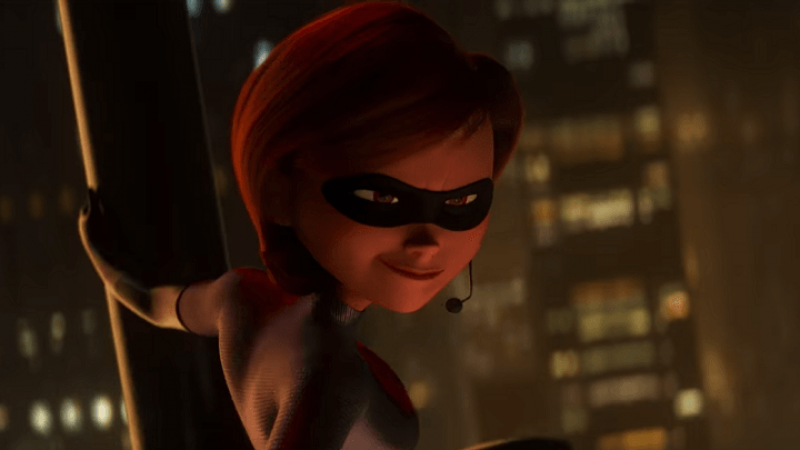
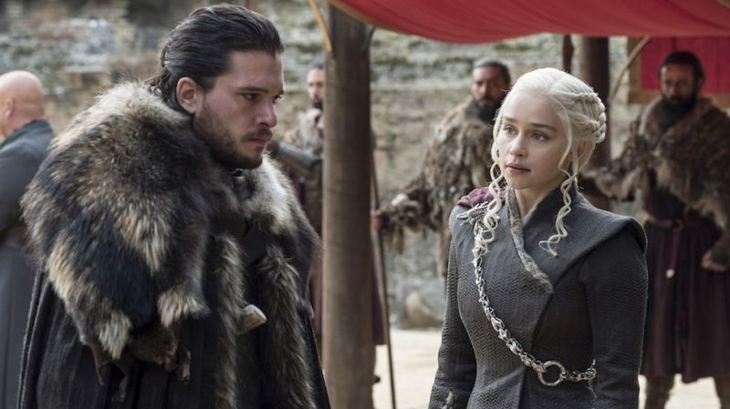
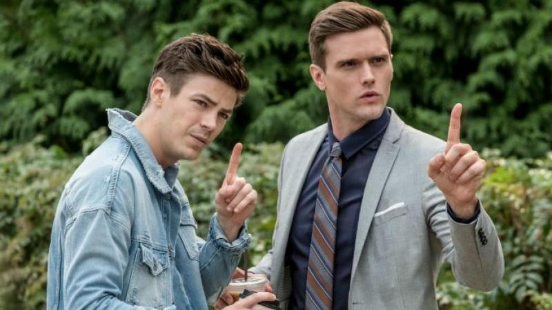
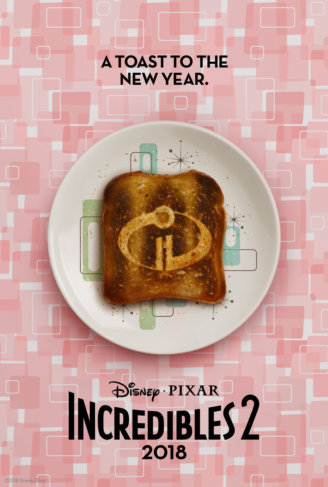
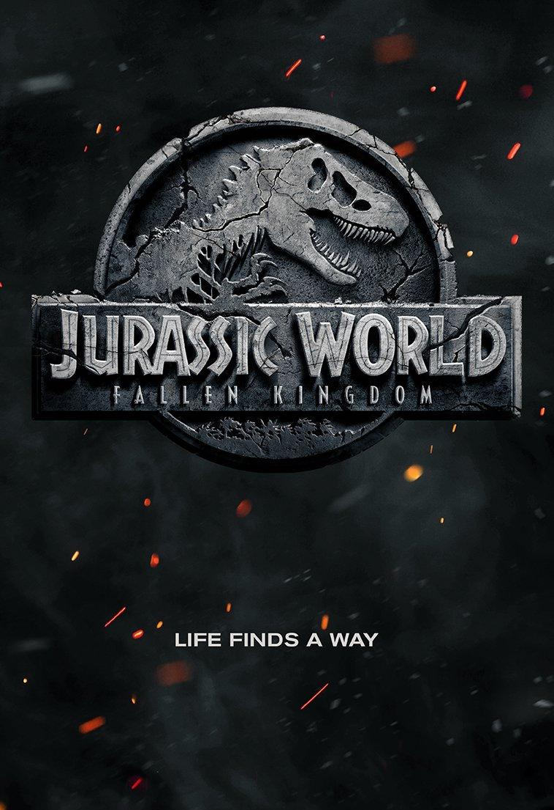
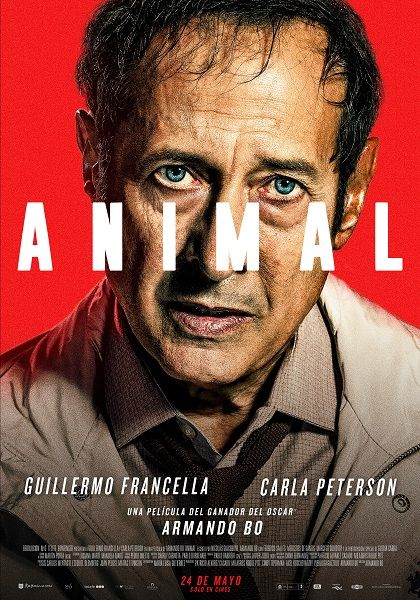

<div class="container-fluid">
    <div class="row">
        <div class="col-md-8  fd-propio-jam rounded">
            <article class="col-md-12">
                <h2>Los Increíbles 2 ya empezó a romper récords</h2>
                <figure class="col-md-12 pr-5 pl-5">
                    <figcaption class="rounded">Celebra Disney Pixar.</figcaption>
                    
                </figure>
                <div class="col-md-12 rounded">
                    <p>La secuela de
                        <span class="font-weight-bold">Los Increíbles (The Incredibles, 2004)</span> que tanto estuvimos esperando finalmente llegó a los
                        cines, y ya empezó a romper récords en la taquilla.</p>
                    <p>Según reportaron algunos medios,
                        <span class="font-weight-bold">Los Increíbles 2 (The Incredibles 2, 2018)</span> recaudó más de 18 millones de dólares sólo la noche
                        del jueves en
                        <span class="font-weight-bold">Estados Unidos</span>, horas antes de su estreno oficial en dicho país. Con esta cifra superó a
                        <span class="font-weight-bold">Buscando a Dory (Finding Dory, 2016)</span>, que tenía el primer lugar en el podio de las películas
                        animadas, pero con menos de la mitad de lo que obtuvo la última entrega de
                        <span class="font-weight-bold">Pixar</span>.</p>
                    <p>La familia
                        <span class="font-weight-bold">Parr</span> volvió con toda y los fans parece que están muy conformes. ¿Ya la viste?</p>
                    <hr>
                </div>
            </article>
            <div class="row">
                <div class="col-md-6 rounded">
                    <article>
                        <h5>Game of Thrones no va a estar en la San Diego Comic Con</h5>
                        <figure>
                            <figcaption>HBO se bajó cerca del inicio.</figcaption>
                            
                        </figure>
                        <p>La
                            <span class="font-weight-bold">Comic Con de San Diego</span> es uno de los eventos más importantes a nivel mundial sobre entretenimiento.
                            La edición de este año comenzará el
                            <span class="font-weight-bold">19 de julio</span> y
                            <span class="font-weight-bold">HBO</span> ya anunció que no va a estar presente.</p>
                        <p>
                            <span class="font-italic">“Debido a los tiempos de producción y las fechas de estreno de Game of Thrones y Westworld, no
                                vamos a presentar nada de estas series este verano”</span>, explica el comunicado de la empresa
                            sobre su participación en el evento.</p>
                        <p>Por otro lado,
                            <span class="font-weight-bold">SyFy</span> confirmó que va a tener paneles relacionados a la nueva serie de
                            <span>George R. R. Martin</span>,
                            <span class="font-weight-bold">Nightflyers</span>,
                            <span class="font-weight-bold">Krypton</span> y
                            <span class="font-weight-bold">Deadly Class</span>. Hasta ahora no sabemos muy bien qué nos van a mostrar pero seguramente hayan
                            anuncios interesantes sobre estos shows.</p>
                        <p>¿Lo estás esperando?</p>
                        <hr>
                    </article>
                </div>
                <div class="col-md-6 rounded">
                    <article>
                        <h5>The Flash: Elongated Man será más importante en la próxima temporada</h5>
                        <figure>
                            <figcaption>Cecile Horton también formará parte del equipo.</figcaption>
                            
                        </figure>
                        <p>Las series del Arrowverse ya se están preparando para sus nuevas temporadas.
                            <span class="font-weight-bold">The CW</span> y
                            <span class="font-weight-bold">DC</span> siguen apostando fuerte a los shows comiqueros, que volverán a cruzarse en un mega
                            crossover que traerá, además, la incorporación de
                            <span class="font-weight-bold">Batwoman</span> al universo televisivo.</p>
                        <p>Pero
                            <span class="font-weight-bold">Katherine Kane</span> no será el único personaje importante en esta nueva etapa de las series.
                            The Flash traerá de vuelta a su equipo para proteger
                            <span class="font-weight-bold">Central City</span> y sumará 2 personajes como regulares.
                            <span class="font-weight-bold">Cecile Horton</span> y
                            <span class="font-weight-bold">Elongated Man</span>, interpretados por
                            <span class="font-weight-bold">Danielle Nicolet</span> y
                            <span class="font-weight-bold">Hartley Sawyer</span>, se sumarán de manera definitiva al elenco, anticipando que sus personajes
                            tendrán un rol mucho más importante en la temporada 5.</p>
                        <p>The Flash y el resto de los shows comiqueros volverán con nuevos episodios en la segunda mitad del
                            año.
                        </p>
                        <hr>
                    </article>
                </div>
            </div>
        </div>
        <div class="col-md-4 rounded bg-info barra-derecha">
            <div class="col-12">
                <h3>Novedades mas relevantes del cine.</h3>
            </div>
            <hr>
            <div class="offset-1 col-10">
                <div class="row">
                    <div class="col-12 mt-3">
                        <h6>Los Iincreibles 2</h6>
                    </div>
                    <figure class="col-5 my-auto hoverable">
                        
                    </figure>
                    <div class="col-7">
                        <ul>
                            <li>Fecha de Estreno en Argentina</li>
                            <p>Jueves 14 de Junio de 2018</p>
                            <li>Género</li>
                            <p>Animación Familiar Aventuras</p>
                            <li>Director</li>
                            <p>Brad Bird</p>
                            <li>Duración</li>
                            <p>2h 5m</p>
                        </ul>
                        <hr>
                    </div>
                    <figure class="col-12 mt-3">
                        <h6>Jurassic World: El reino caído</h6>
                    </figure>
                    <div class="col-5 my-auto">
                        
                    </div>
                    <div class="col-7">
                        <ul>
                            <li>Fecha de Estreno en Argentina</li>
                            <p>Jueves 21 de Junio de 2018</p>
                            <li>Género</li>
                            <p>Ciencia ficción/Acción</p>
                            <li>Director</li>
                            <p>Juan Antonio Bayona</p>
                            <li>Duración</li>
                            <p>2h 10m</p>
                        </ul>
                        <hr>
                    </div>
                    <div class="col-12 mt-3">
                        <h6>Animal</h6>
                    </div>
                    <figure class="col-5 my-auto">
                        
                    </figure>
                    <div class="col-7">
                        <ul>
                            <li>Fecha de Estreno en Argentina</li>
                            <p>Jueves 24 de Mayo de 2018</p>
                            <li>Género</li>
                            <p>Drama/Suspenso</p>
                            <li>Director</li>
                            <p>Armando Bo</p>
                            <li>Duración</li>
                            <p>1h 53m</p>
                        </ul>
                        <hr>
                    </div>
                </div>
            </div>
        </div>
    </div>
</div>